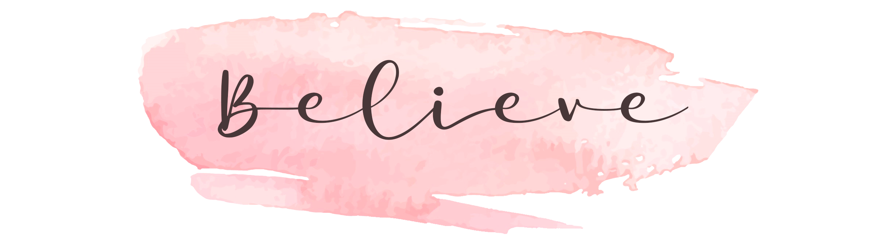

Home
Aromas
Modelos
Modelos
Línea clásica
Línea romántica
Línea moderna y accesorios
Fotos
Información
Contacto

TIPS
Ubicar el envase sobre una superficie no inflamable.
Encender el fosforo o palillo.
No apagar sin que la primer capa de cera este derretida.
No dejar encendida por mas de 3 o 4hs.
Apagar tapando el recipiente o con apagavelas.
Antes de volver a encender siempre cortar la punta del pabilo para evitar que la cera se manche.
No dejar al alcance de niños o mascotas.
No dejar la vela encendida sin supervision.
Sabias que...
La cera de soja produce una combustion limpia.
No emite sustancias tóxicas.
La combustion se produce de forma mas lenta, aporta una mayor duracion de quemado.
Es un recurso agrícola renovable totalmente ecológico.
Se limpia con agua y jabón, es biodegradable.